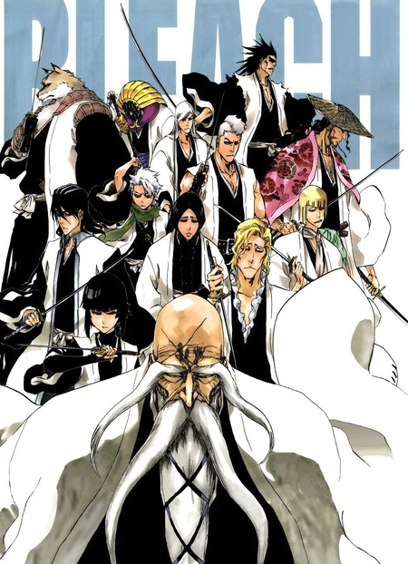
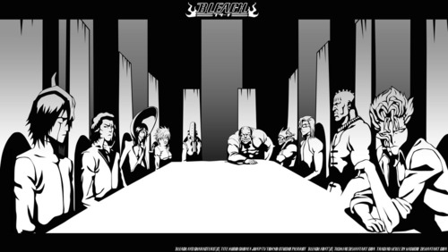
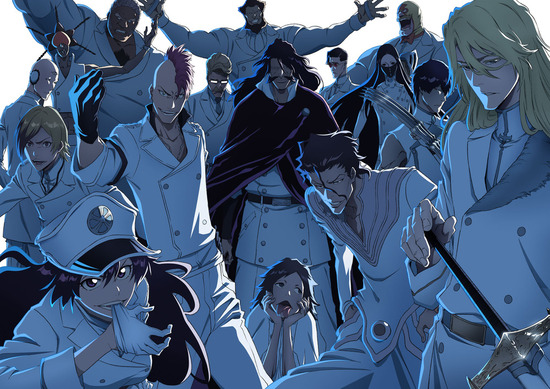

Viz Media obtained foreign television and home video distribution rights to the Bleach anime in March 2006. Bleach was broadcast in the United States on Adult Swim from September 2006 to November 2014.
Bleach: Thousand-Year Blood War, a sequel series covering the manga's final story arc, also animated by Pierrot and directed by Tomohisa Taguchi, aired its first 13-episode cour on TV Tokyo from October to December 2022. The second cour is set to premiere in July 2023.
Plot
The series adapts Kubo's manga with the main story arcs and introduces anime exclusive ones. In Karakura Town, high
school student Ichigo Kurosaki becomes a substitute Soul Reaper (死神, Shinigami, literally, "Death God"), when Rukia
Kuchiki risks her life to protect him from a Hollow. Although initially reluctant to accept their responsibility, he
takes her place, and during this time they discover that a few classmates are spiritually aware and have their own powers:
Quincy survivor Uryū Ishida uses spiritual particles, Orihime Inoue has a group of protective spirits called Shun Shun Rikka
and Yasutora Sado ("Chad") has strength equal to the Hollows encased in his arm.
When Rukia is sentenced to death for transgressions in the human world and sent to the Soul Society, Ichigo meets Kisuke Urahara
and Yoruichi Shihōin, the duo of exiled Soul Reapers. They allow him and his friends to save Rukia. After this, it is revealed
that ex-squad captain Sōsuke Aizen framed Rukia for the crime and has been illegally experimenting on Soul Reapers and Hollows.
Aizen plans to conquer the Soul Society by using the Hōgyoku, a legendary powerful substance turning Hollows into half Soul Reapers.
After faking his death and his reappearance caused a fight with some people, Aizen escapes into Hueco Mundo, the realm of Hollows,
and later kidnaps Orihime as she is instrumental in creating the Oken, a power that will allow him to kill the Soul King, the ruler
of the Soul Society.
After being trained by the Vizards, other exiled Soul Reapers and the victims of Aizen's experiment, Ichigo and his friends travel into
Hueco Mundo. Facing a group of Arrancars, who are Hollows given Soul Reaper abilities, led by an elite group known as the Espadas, which
are composed of ten Arrancars with exemplary strength. Espadas serve as commanders in Aizen's army and each has the factions of weaker
Arrancars. Along with Aizen, Gin Ichimaru and Kaname Tōsen, the Espada as a group possess comparable strength to Soul Reaper captains.
After rescuing Orihime, Aizen reveals her kidnapping was a distraction to allow him to take Karakura Town, as its spiritual energy is
what is needed for the Oken. After being trained by his father Isshin, another exiled Soul Reaper, Ichigo sacrifices his power to seal
Aizen away when the Hōgyoku rejects its master, and the Soul Reapers defeat the Espadas.
Months later, Chad and the members reveal themselves as Fullbringers in a group called Xcution. They can give up their powers to restore
other ones and they plan on doing so for Ichigo, who uses the power of Fullbringer. However, it is all a ruse by their leader Kugo Ginjo,
a Fullbringer and former Substitute Soul Reaper, to extract his powers and empower all of them. Ichigo has his Soul Reaper powers restored,
when he gains his trust from the Soul Society. After helping other Soul Reapers defeat Ginjo's team, Ichigo resumes his duty as a Substitute
Soul Reaper.
Several anime exclusive story arcs are introduced during the series. The first arc focuses on the Bount, a group of spiritual humans who are
immortal longer by stealing souls. Their leader, Jin Kariya, seeks to destroy the Soul Society in revenge. However, Ichigo and his allies defeat
them. The second arc focuses on Shūsuke Amagai, a Soul Reaper captain replacing Ichimaru. Amagai seeks revenge against Captain Yamamoto for the
death of his father and uses the clan's forbidden experiment. However, Amagai realizes his mistake and kills himself. The third arc features the
evil Zanpakutō spirit Muramasa, who turns itself and other ones into spiritual beings to take revenge on the Soul Society for imprisoning its master
Kōga Kuchiki. After succeeding, he is double-crossed and transforms into a monstrous creature that Ichigo defeats, but after Muramasa reveals the
intention was to have Soul Reapers and Zanpakutō communicate on equal terms. The fourth and final arc features an event in which Kagerōza Inaba
creates modified copies of all Soul Reapers in Reigai bodies. He attempts to fuse with Nozomi Kujō into an original being Ōko Yushima. However,
Nozomi sacrifices herself to defeat Inaba and Ichigo loses his power.
Main Groups
1.Soul Reapers
While the history of the Gotei 13 remains largely unknown, the organization was founded by Genryūsai Shigekuni Yamamoto, who has stood at the
head of the group since its inception.
The first generation of the Gotei 13 consisted of Yamamoto, Chika Shihōin, Kinroku Izuhara, Chigiri Shijima, Danjirō Obana, Furōfushi Saitō, Nobutsuna
Shigyō, Batsu'unsai Katori, Entetsu Kumoi, Furuoki Ōtogawa, Yachiru Unohana, Uhin Zenjōji, and Saizō Sakahone. Shunsui Kyōraku considers this
generation to be the strongest version of the Gotei 13.
According to Yhwach, the original Gotei 13 were "defenders" in name only, comprised of nothing less than a brutal mob of the most dangerous
killers in the Seireitei, but it was for this very reason they were a force to be feared and able to enforce order, especially because Yamamoto
was a ruthlessly pragmatic leader who would hold even his subordinates as expendable. In their pursuit of enforcing order, they were personally
involved in the extermination of the Quincy race, whose actions against Hollows threatened the balance of life and death. It is noted that the
Gotei 13 underwent dramatic changes after the extermination of the Quincy, mellowing out to become less brutal and barbaric in the ensuing
peace, having now found a sense of justice upon discovering things to protect and treasure.
The Gotei 13 is made up of thirteen divisions, with several divisions having certain specializations.
The Gotei 13 is led by the Captain-Commander, who has the statutory authority to conduct all the affairs of the Gotei 13 while deferring to the
authority of the Central 46 Chambers in civil and legislative matters involving the Soul Society.
As with any army, the Gotei 13 has ranks. There are 20 ranks for officers, but no ranks for non-officers. The lower the number is, the higher the
rank. The ranks and their descriptions are below, from highest to lowest in terms of strength. The Gotei 13 is an organization with a merit-based
hierarchy based on demonstrations of skill, experience, and power, and has disposed of the system of rank based on seniority. Abilities and efficacy
to obtain results are the only criteria used to determine one's rank.
2.Arrancars
Arrancar are a group of Hollows that gained similar powers to that of a Shinigami by removing their masks. The individuals that Aizen turned into
Arrancar using the Hōgyoku, generally possess powers far beyond those of previous Arrancar, with some exceptions like Coyote Starrk and Ulquiorra Cifer.
Especially powerful Arrancar were assigned ten numbers by Sōsuke Aizen and came to be known as the Espada.
Arrancar are the result of Hollows removing their masks. However, an average Hollow removing their mask would not be a problem for the Gotei 13: to hold
their own against the Gotei 13, the ones removing their masks would need to be Gillian or stronger. Pseudo-Arrancar have not developed much in the past few
decades. Sōsuke Aizen was the first to create a breakthrough; Aizen managed to create a full Arrancar by using the Hōgyoku.
The Espada are comprised of ten Arrancar with exemplary strength. Members of the Espada are given a number from 0-9. The lower the number, the more Reiryoku the
Espada has. Each Espada has a tattoo with their number somewhere on them, such as Grimmjow Jaegerjaquez, whose tattoo is on his lower back, and Coyote Starrk,
whose tattoo is on the back of his left hand. Along with Sōsuke Aizen, Gin Ichimaru, and Kaname Tōsen, the Espada as a group possess comparable strength to Soul
Society's Gotei 13 Shinigami captains.
3. Quincies
The Quincy (滅却師 (クインシー), Kuinshī; Japanese for "Monk of Destruction") are living beings that have the ability to detect the existence of Hollows and other
Souls. Most of the Quincy were exterminated by the Shinigami over 200 years ago in order to prevent the collapse of the worlds due to the Quincy over-hunting and
destroying all Hollows they encountered. Quincy are the polar opposite of Shinigami.
The Quincy were scattered all over the world at one time. They were a clan dedicated to fighting Hollows.
It is unknown when the Quincy first came into being. Isshin Kurosaki claims that Yhwach began the Quincy and his blood flows in every Quincy. However, according to
the Quincy themselves, there were Quincy before Yhwach, including one every few decades who struggle to absorb Reishi. Yhwach himself believes this, and after realizing
that such Quincy cannot absorb Reishi because they have the same power-sharing ability as he does, he searched for another one for 200 years. The left arm and heart of the
Soul King - Yhwach's father - identify as Quincy, and the left arm asserts that it has always been a Quincy.
Since the origin of the Quincy, many years passed within Soul Society trying to appeal to the Quincy that the handling of Hollows should be left to the Shinigami. The Quincy
refused to accept the situation. As time went on, the number of Quincy increased and the cycle of souls became more unstable, forcing the Shinigami to reluctantly wipe out the
Quincy in order to maintain the balance of the world.
Protaganist
Ichigo Kurosaki

The Quincy (滅却師 (クインシー), Kuinshī; Japanese for "Monk of Destruction") are living beings that have the ability to detect the existence of Hollows and other
Souls. Most of the Quincy were exterminated by the Shinigami over 200 years ago in order to prevent the collapse of the worlds due to the Quincy over-hunting and
destroying all Hollows they encountered. Quincy are the polar opposite of Shinigami.
Ichigo was born on July 15th as the son of Isshin Kurosaki and Masaki Kurosaki, 15 years before he became a Shinigami. His sisters Karin Kurosaki and Yuzu Kurosaki were born
a few years later. When he was four, Ichigo joined a karate dojo, where he met and befriended Tatsuki Arisawa. Though Tatsuki beat Ichigo in every match they had, she would help Ichigo
if he was being picked on by bullies and cheer him up if he was upset. Ichigo was able to see Pulses for as long as he could remember. He could see them so clearly, as a child, he could
not tell the living from the dead. This resulted in him appearing to other people to be looking at deserted places and talking to himself. This caused people to say he could see ghosts,
though when Tatsuki asked him about this, he denied being able to see them.
Shortly before Ichigo became a Shinigami, he and Sado began attending Karakura High School, and their reputations preceded them. During a fight with a gang led by Reiichi Ōshima, Ichigo
and Sado met Keigo Asano and Mizuiro Kojima, saving the former in the process. While Keigo was initially afraid of Ichigo and Sado, both he and Mizuiro later became friends with them.
Ichigo later met Uryū Ishida, asking him why he chose to attend Karakura and not a gifted school, as he would have thought that Uryū would want to follow in his father's footsteps and become
a doctor. However, Uryū replied that he had no desire to become one.